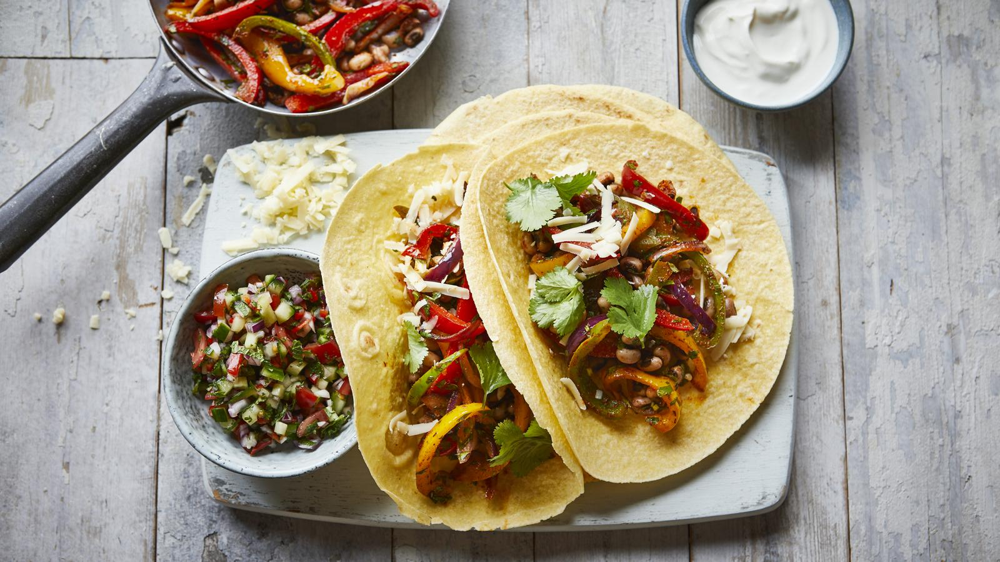

Ingredients:
Bean sauce:
- 400 g kidney beans
- 150 g sugar snap peas
- 100 g sweet corn
- 1 onion
- 1 red bell pepper
- 3 cloves of garlic
- 1 tin of chopped tomatoes
- 2 tsp ground cumin
- 2 tsp garlic powder
- 2 tsp ground coriander
- 2 tsp oregano
- 1 tsp chilli powder
- Salt & pepper to taste
Guacamole:
- 1 large avocado
- 1/2 red onion
- 5-7 cherry tomatoes
- Juice of 1/2 lime
- Handful of fresh coriander leaves (optional)
- Salt & pepper to tase
To serve:
- 10 small tortilla wraps
- Lettuce
- Vegan shredded cheese
Method:
Bean sauce:
- Chop onions, bell pepper and sugar snap peas into small pieces. Fry them for a few minutes on a dash of olive oil
- Add garlic, cumin, coriander, garlic powder and chilli. Mix well
- Add tinned tomatoes, kidney beans and sweet corn. Mix everything together, cover with a lid and leave to stew for 10 minutes
- Add salt & pepper to taste
Guacamole:
- Peel onion and chop it finely
- Chop tomatoes into medium size pieces
- Mash avocado with a work
- Put onion, tomatoes and avocado in a bowl
- Add lime juic, salt and black pepper
- Mix everything together
Serving:
- Pour bean sauce to a bowl and put it on a table along with tortilla wraps, guacamole, shredded lettuce and cheese
- Take one wrap and spread guacamole on it
- Add bean sauce and sprinkle it with some shredded cheese
- Top everything with a small handful of lettuce, fold the wrap and enjoy!
